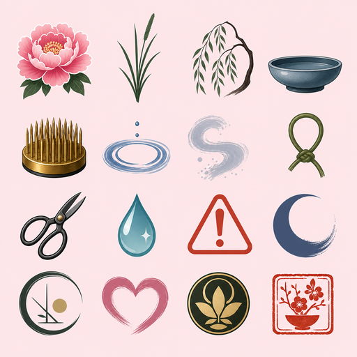

First Peony Line
Botan Ikebana Balance Atelier
Anchor stems into the kenzan, balance peony weight, preserve empty space, and finish before flowers wilt.
Anchor center · Line grass · angle −68°
Press Start. Audio begins after your first gesture; visual cues work muted.